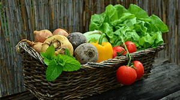
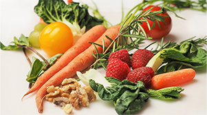
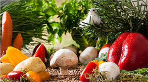

安心の有機野菜で豊かな食卓を
農薬や化学肥料を使わずに育てられた有機野菜。栽培している 約50種類のお野菜のうち季節のお野菜５品目を毎月１度、定期的に お届けします。はじめてのお客様は、お得な「お試しバスケット」を ご注文くださいませ。
おすすめ商品

有機野菜お試しバスケット
農薬や化学肥料を使わずに育てられた有機野菜の定期便を頼む前に一度試してみたい方におすすめ
おすすめ

有機野菜定期便
農薬や化学肥料を使わずに育てられた有機野菜。栽培している約50種類のお野菜のうち季節のお野菜５品目を毎月１度、定期的にお届けします。

有機野菜定期便プレミアム
農薬や化学肥料を使わずに育てられた有機野菜。栽培している約50種類のお野菜のうち季節のお野菜７品目を毎月１度、定期的にお届けします。
販売会社
| 会社名 | 創造有機野菜株式会社 |
|---|---|
| 代表 | 松尾 千鶴 |
| 住所 | 大阪府堺市有機区野菜町2-1 |
| 電話番号 | 000-000-0000 |
| URL | www.xxxxxxxxxxx.com |